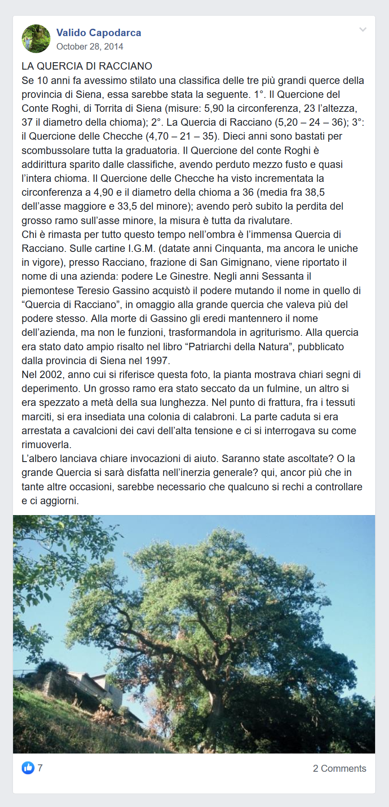
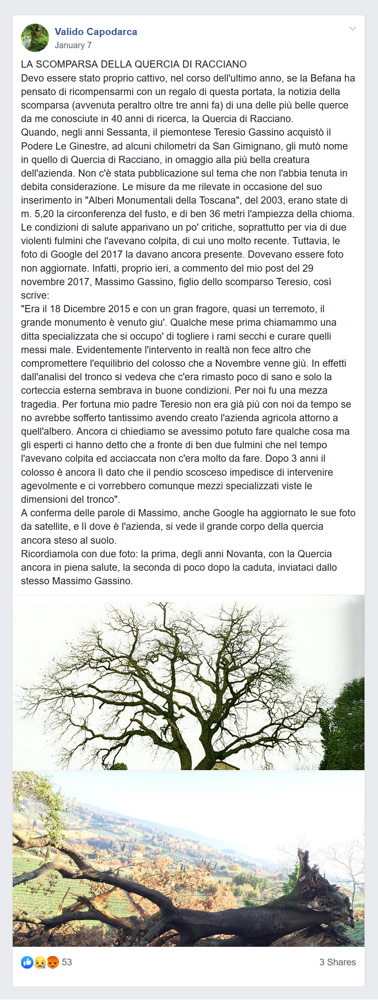

La Quercia di Racciano
Il ricordo della scomparsa Quercia di Racciano a firma di Valido Capodarca, autore di libri sugli alberi monumentali italiani, presso i gruppi social di appassionati di alberi “Amici degli alberi” e “Amanti degli alberi monumentali”. Teresio dedicò il nome della sua azienda vitivinicola all’albero secolare che sorgeva nel podere sangimignanese da lui acquistato negli anni Sessanta.

